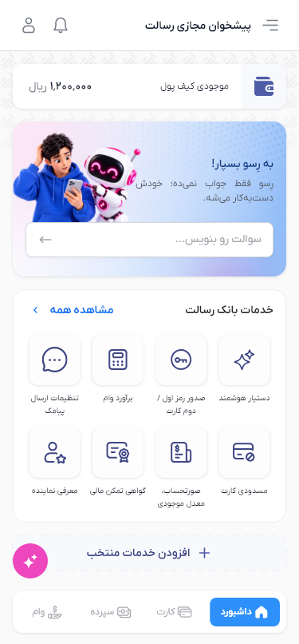
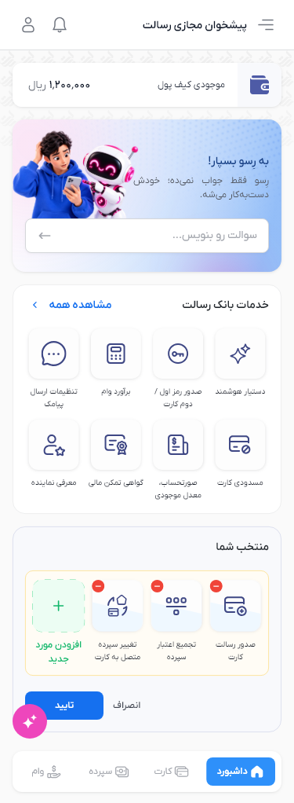
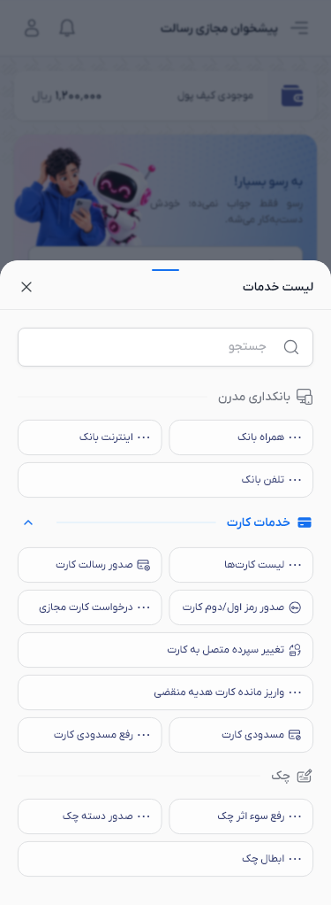
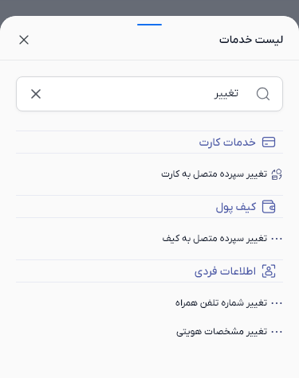
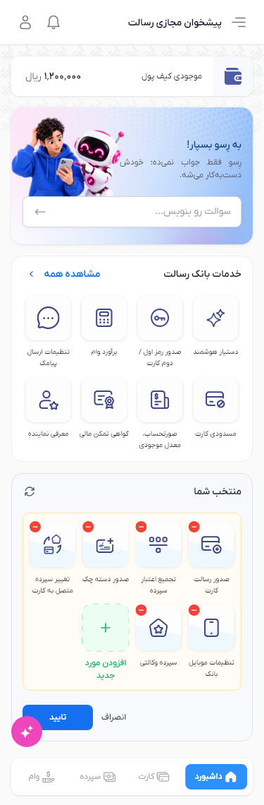
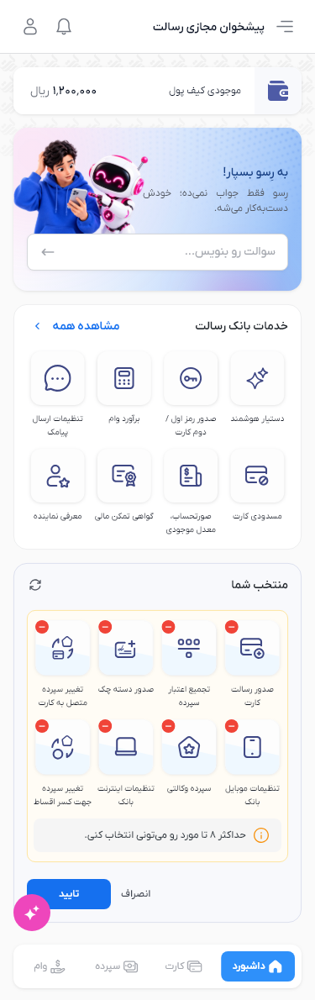
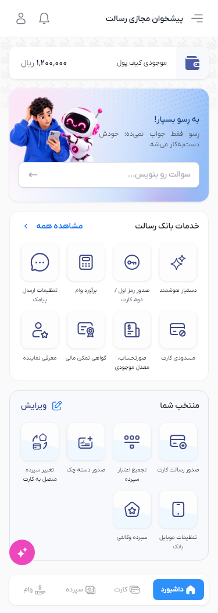
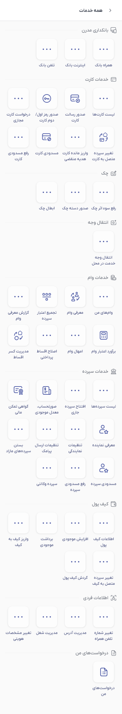

Rendered Flutter screens at the Figma frame sizes. Native status/navigation bars and the system keyboard are excluded. Animations are paused for comparison. The running app types and erases the hint and moves the colored backdrop on a 12-second cycle; reduced motion keeps both still.
Dashboard architecture and component audit







